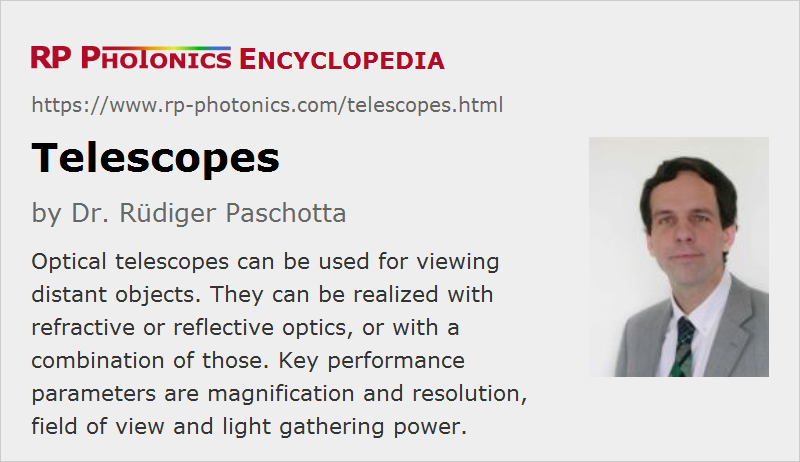

Telescopes
Definition: optical instruments for viewing distant objects, or sometimes more generally afocal systems
German: Teleskope
Categories: general optics, vision, displays and imaging
How to cite the article; suggest additional literature
Author: Dr. Rüdiger Paschotta
Telescopes are generally understood to be optical instruments for viewing distant objects, as expressed by the Greek words tele (far) and skopein (to view). In this article, we focus on optical telescopes, i.e., not other types of telescopes e.g. for radio waves or X-rays.
We first consider the basic optical function of a telescope without looking at concrete realizations. According to the original use in conjunction with the human eye, the telescope receives light with approximately plain wavefronts and also outputs light with plain wavefronts, only with a reduced diameter (see Figure 1), typically below the diameter of the eye's pupil. In a description based on geometrical optics, parallel input rays are resulting in parallel output rays.
The contribution of the human eye to the optical function is obviously of vital importance. In the eye, the light output of the telescope is focused to the retina, and each input beam direction is (at least within geometrical optics and without image aberrations) associated with one image point on the retina. Effectively, one obtains imaging of a very distant object onto the retina, when the eye is accommodated to infinite distance (as is normally the case for a relaxed eye). Compared with direct viewing, a certain image magnification is achieved.
In case that a telescope is used with an image sensor, for example, that also needs to be equipped with an additional focusing lens or a more sophisticated kind of objective for forming an image. Alternatively, the optical design of the telescope itself can already have the imaging function.
At a first glance, one may think that the telescope should lead to a demagnification of images, since a collimated beam is transformed into another collimated beam with smaller beam radius. However, the telescopes is actually magnifying. This is because the location of the image point on the retina is not dependent on a beam diameter, but rather a beam direction, and further analysis shows that any change of the input beam direction is transformed into a larger change of the output beam direction – just as the divergence of a beam is increased when the beam diameter is reduced. Essentially, what is relevant is the angular magnification of the telescope.
Although a telescope can be slightly modified or adjusted to focus at objects in a finite distance, its basic function is as explained above: producing parallel output rays for parallel input rays, assuming that the imaging is completed e.g. by the optical system of the eye. When describing that basic configuration with the ABCD matrix algorithm, the obtained matrix has a C value equal to zero: any beam offset at the input may not cause a change of propagation angle. Such a system is called afocal. It has no focal length, no focal points, no principal points and no nodal points. Because of the general rule A · D − B · C = 1, we then have A · D = 1. We can further identify D with the magnification and recognize the inversion relation to A, which determines the reduction of beam diameter.
In a more general sense, the term telescope is often understood to be an afocal system as explained above, which is not necessarily used for viewing purposes. For example, beam expanders as used in laser optics (e.g. for transmitters in free space optical communications) are often called telescopes. On the other hand, not all telescopes for viewing purposes are designed as afocal systems; some of them focus light to some image plane, where an image sensor is placed, for example. For a measurement telescope, it is possible to insert a reticle in that image plane, which will then also appear in the generated image.
Refractive Telescopes
Figure 2 shows the basic setups of two common types of refractive types of telescopes (refractors), each one being based on two lenses. The Keplerian telescope uses two focusing lenses, where the distance between them is the sum of the focal lengths (both taken as positive). It produces inverted images. Between the lenses, there is a real image plane.

The larger lens at the input is called the objective and the one towards the viewing eye is the ocular lens (eyepiece).
A problem of the Keplerian telescope is that the field of view is seriously limited by the size of the ocular lens. It is possible to increase the field of view by inserting an additional field lens.
The Galilean telescope, shown in Figure 2 for the same magnification, contains a focusing and a defocusing lens and produces non-inverted images. It does not have a real image plane.
Lenses cause chromatic aberrations, related to the dependence of the focal length of a lens on the optical wavelength. That problem is often much reduced by using an achromatic lens doublet or even a triple-lens apochromat at least for the objective, sometimes also for the ocular. Otherwise, the design of objectives for telescopes is often quite simple (e.g. compared with photographic objectives), at least if a relatively small field of view is sufficient for the application. More sophisticated designs are required for relatively wide-field objectives, is required for astro cameras, for example. See below for more information on optical aberrations.
For inverting telescope types (i.e., those producing inverted images), one may either accept that inversion or undo it with additional optics. For telescopes with light delivery to photographic films or image sensors, the inversion is of course not relevant.
Refractive telescopes are often used in the form of binoculars (see below).
Note that refractive telescopes do not necessarily need to rely on lenses: they can also be realized with prisms, usually in the form of anamorphic prism pairs.
Reflective Telescopes
Telescopes can also be realized based on purely reflecting optics, i.e., with mirrors. While focusing and defocusing functions are easily achieved with curved mirror surfaces, one requires design adaptations in order to cope with the inevitable change of beam direction upon reflection. Two common solutions – the Cassegrain telescope and the Newton telescope – are shown in Figure 3. Both have a secondary mirror which is suspended with some spider and causes a circular central obscuration of the primary mirror. That leads to some loss of resolution, which is avoided by some other telescope designs, where however the inherent asymmetries cause other types of problems.
Both are not afocal systems as explained above, but rather produce a focal point in an accessible area, where one could place an image sensor, for example. However, it is of course no problem to convert such a telescope into an afocal system for direct viewing with the human eye.
Reflective telescopes typically work with aspheric mirrors. For example, Cassegrain reflectors are based on a parabolic primary mirror and a hyperbolic secondary mirror, which reflects light through a hole in the primary mirror.
The main advantages of reflective telescopes, compared with refractive telescopes, are the following:
- Any chromatic dispersion is avoided. That advantage has already been realized by Isaac Newton, who therefore in 1668 developed the first reflecting telescope, called the Newtonian telescope.
- One can produce relatively large telescope mirrors which still have a reasonable weight, while large lenses would become very heavy and expensive.
For those reasons, reflective telescopes have become the usual solution for astronomy.
Early reflective telescopes suffered from the problem of rapid tarnishing of the reflecting surfaces, when using speculum metal mirrors. This problem was done largely solved by using metal-coated first surface mirrors based on glass or ceramic mirror substrates. Those are also harder, i.e., they preserve their shape more accurately, and some of them exhibit very small thermal expansion coefficients.
Extremely precise large telescope mirrors are nowadays usually made with glass ceramic substrate materials, optimized for a very low coefficient of thermal expansion. Note that deviations from the ideal shape should ideally be far below one optical wavelength. The wavefront accuracy can be further improved with adaptive optics, which usually correct distortions from the primary mirror not at their source, but at a more convenient location, where the beam path is more compact.
Catadioptric Telescopes
Telescopes which combine refractive and reflective optics are called catadioptric. That combination provides additional options for correcting image aberrations (even for a wide field of view) and for developing compact and lightweight designs. The simplest type is the catadioptric dialyte, consisting of a single-element focusing lens as the objective and a silver-coated concave mirror.
Optical Aberrations
The used lenses and/or mirrors are responsible for various types of optical aberrations, which more or less reduce the obtained image quality:
- Lenses and prisms cause chromatic aberrations, related to the dependence of the focal length of a lens on the optical wavelength. One may use achromatic lenses for minimizing such problems, or avoid lenses altogether.
- Further, there are other aberrations in the form of astigmatism, coma and geometrical image distortion; one usually restricts the field of view such that excessive aberrations of those types are avoided. Particularly if the magnification is large, a smaller field of view may be required. For achieving a larger field of view with good quality, one can replace the objective and ocular with combinations of several lenses, designed for compensating aberrations as much as possible.
- Another problem is the curvature of field. For some telescope designs, the image “plane” is significantly curved, so that sharp images could not be obtained over the whole image area when using a flat image sensor. Therefore, curved image sensors are used with some telescopes, where the field curvature cannot be reduced.
Performance Parameters of Optical Telescopes
Magnification
The magnification is the factor by which the angular resolution for an observer is increased, compared with direct viewing (without the telescope). This parameter is of course relevant only for telescopes which are used together with the human eye instead of an image sensor, for example.
A design with high magnification does not inevitably have a high image resolution. However, the magnification should be large enough to make full use of the image resolution – as in a microscope.
One may realize different values of the magnification of a telescope by using different oculars depending on the observation conditions. The total angular magnification is the product of those parameters of objective and ocular.
Field of View
The field of view is the range of angular directions which can be viewed with a fixed orientation of the telescope. As explained above, it is often limited by image aberrations, which become more severe for extreme viewing angles.
A large field of view is particularly relevant, for example, for astronomical survey telescopes, which are used to image large areas of the sky.
Image Resolution and Light Gathering Power of Telescopes
The achievable image resolution of a telescope, quantified as an angular resolution on the object side, is ultimately limited by diffraction if the optical quality is excellent; the essential design parameter is the diameter of the entrance aperture. Although the output aperture is much smaller, diffraction is less relevant there due to the image magnification. The angular resolution can be estimated as 1.22 times the optical wavelength divided by the aperture diameter. For green light in a telescope with a 1-m mirror, this leads to a resolution of ≈0.67 μrad = 0.14 arcseconds.
A large aperture usually also leads to a high light gathering power, which is important for observing faint objects like distant stars.
Typical Format of Specification
The most essential design parameters of a telescope are the opening aperture and the magnification. These are often specified in a compact form, for example as 8 × 30 for a binocular telescope if the magnification is 8 and the entrance diameter is 30 mm. For an astronomical telescope, such a specification may not given, because the instrument can be used with different eyepieces, leading to different values of the magnification.
Telescopes for Specific Applications
Telescopes for Terrestrial Observations
Small terrestrial telescopes are often made in the form of hand-held binoculars, essentially consisting of two independent telescopes – one for each eye. The spatial separation of the two objectives can be increased beyond the spacing of the human eyes in order to achieve better 3D vision. The required modification of the beam paths can be made with prisms which may at the same time undo the image inversion, as far as that is caused by the other optics. Binoculars are typically used for purposes like ornithology, hunting, sports watching and military reconnaissance.
There are also compact monoculars for viewing with one eye, which can be made with lower cost and weight.
Larger telescopes, e.g. for applications in geodesy, are often made as monoculars and are mounted on a flexible system, which may be motorized for accurately looking in certain directions.
Small telescopes are mounted on rifles for precise targeting and are then called riflescopes. Similar telescopes are also used for other types of weapons.
Astronomical Telescopes
Rather large telescopes – most often with a Cassegrain architecture – have been developed for astronomical observations. The largest realized ones have open apertures with diameters around 10 m. The diffraction limit for the angular resolution is then normally no more reachable due to image distortions in the atmosphere – even when telescopes are placed on high mountains. Therefore, adaptive optics are increasingly used for correcting such distortions. The measurement of the distortions to be corrected can be made on the same telescope, either using light from stars or from artificial laser guide stars.
Several even larger telescopes are currently planned, with apertures above 20 m and partly even well above 30 meters.
Astronomical observations often require substantial time in order to acquire enough light energy for a proper exposure of a photographic film or an image sensor. It is then necessary to accurately move the telescope such that the effects of the rotation of Earth are compensated.
High performance is required also from the used image sensors, which are mostly of CCD type. Rather large sensor designs, possibly including multiple CCD chips, are used in various telescopes. For highest sensitivity, they are often operated at low temperatures. Further, one may take additional measurements under dark conditions and apply noise subtraction algorithms.
Some large observatories (e.g. the European Southern Observatory in Chile with its Very Large Telescope) work with a combination of several telescopes, combining signals from them with interferometry for substantial further increases of angular resolution.
Another option for avoiding the problem of atmospheric distortions is to place a telescope outside the atmosphere of Earth – typically in an orbit around Earth. The most famous example is the Hubble Space Telescope (HST), which has been launched in 1990 and has delivered astronomical images of enormous scientific value during several decades. Although its entrance aperture of 2.4 meters is small compared with that of terrestrial telescopes, the freedom of atmospheric distortions allows for very high image quality. Light in the visible, ultraviolet and near infrared region can be utilized. Other space telescopes have later been deployed, for example the Herschel telescope in 2009, which however operates in the far infrared. The planned James Webb Space Telescope is expected to cover the wavelength range from 0.6 μm to 28.5 μm with a primary mirror of 6.5 m diameter.
Instead of imaging, one may analyze the light coming from a star or a galaxy, for example, with a highly sensitive spectrometer. In other cases, the polarization properties of light are carefully studied, using polarimeters.
There are also solar telescopes, which are made specifically for imaging details of the Sun. Here, one is definitely not short of brightness; to the contrary, the system must be able to handle substantial optical powers. Because of the comparatively small observation distance, the angular resolution usually does not need to be as high as for the observation of distant stars. The telescope designs are accordingly quite different from those of other astronomical telescopes.
Suppliers
The RP Photonics Buyer's Guide contains 11 suppliers for telescopes.
Questions and Comments from Users
Here you can submit questions and comments. As far as they get accepted by the author, they will appear above this paragraph together with the author’s answer. The author will decide on acceptance based on certain criteria. Essentially, the issue must be of sufficiently broad interest.
Please do not enter personal data here; we would otherwise delete it soon. (See also our privacy declaration.) If you wish to receive personal feedback or consultancy from the author, please contact him e.g. via e-mail.
By submitting the information, you give your consent to the potential publication of your inputs on our website according to our rules. (If you later retract your consent, we will delete those inputs.) As your inputs are first reviewed by the author, they may be published with some delay.
See also: imaging, magnification, objectives, ocular lenses, afocal optical systems
and other articles in the categories general optics, vision, displays and imaging
|  |
If you like this page, please share the link with your friends and colleagues, e.g. via social media:
These sharing buttons are implemented in a privacy-friendly way!